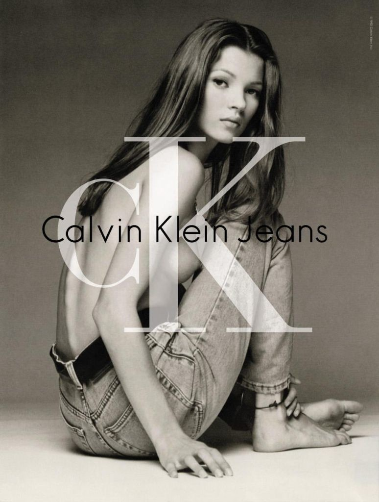
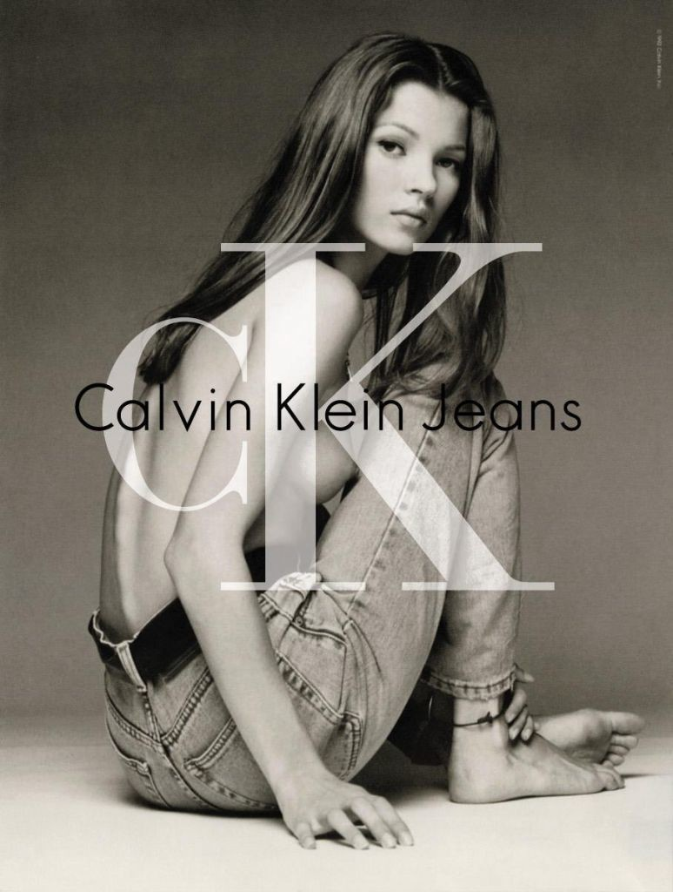

CALVIN KLEIN
Calvin Klein es una marca global de moda reconocida por su estilo moderno, minimalista y sofisticado. Fundada en 1968 por el diseñador estadounidense Calvin Klein, la marca se ha destacado por sus diseños limpios, cortes simples y una estética atemporal. Es especialmente famosa por sus líneas de ropa interior, jeans y fragancias, que combinan sensualidad y funcionalidad, convirtiéndose en un referente de estilo casual y elegante a la vez.
 
